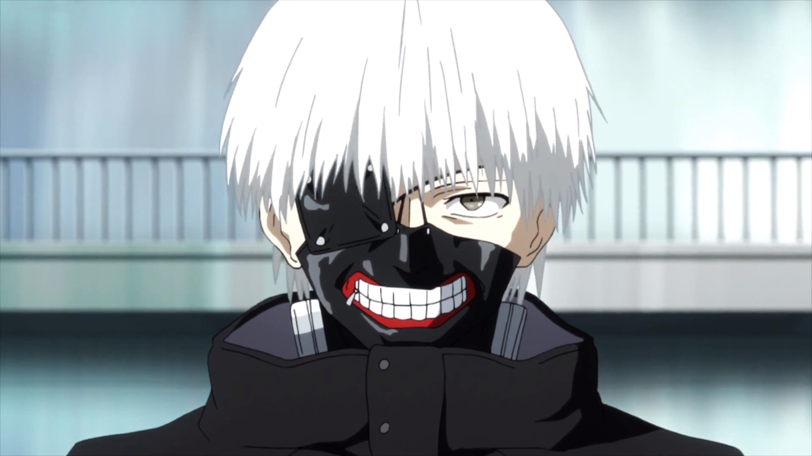

Kagekuri
This anime is about gambling but it is not just normal gambling people
in this anime are crazy people bet not just money body parts i remember an ep some bet their nails people even bet lives in total crazy right
but this specific person doesn't care what she bets she does for the fun of it what a psycopath watch and know more;) hehe

God of highschool
This anime is about a cool dude who lost his memories it is kind of an isekai anime(reincarnation) once he got his memories back,he found out that he was the ...... king watch and find out what he was the king of

One punch man
this anime is about a dumb goy but a strong guy his a hero for fun he finishes
all battles with one punch we all know him as SAITAMA! he passed the practicals to become a hero(stenght tests)but failed the written exam still he is
the strongest hero but the s class classified him as a c class hero


Komi can't communicate
this anime has no powers no magic nothing supernatural but i love it the way it is, even though she(mc) doesn't talk the storyline is a perfect fit her best bud tadano and her goal to get 100 friends watch and know more

One piece
This anime has some adredeline and adventure aswell,it is about thier journey to find a treasure called ONE PIECE thier journey is intense the team goes through hardship and the anime stl continues it has up to 1045 eps maybe more :) watch and find out more

Fairy tail
ah such a beutiful anime with so much plot twists i remember when i thought this anime was useless oh how i regret those words this anime is about a guy who is dragon slayer and is looking for his father and gains friends and enters a guild to become a master wizard so he will be able to fight anyone who disturbs him on his quest :) watch and know more

Baki
This anime oh my gosh the adredeline the battles it's so exelerating/excitng i watched this anime on netflix oh my gosh the battles are so nice to watch if you're loking for an anime with battles an adredeline that's your pick

Your lie in april
Your lie in april a romance anime that ended in a tragic way the way it ended was a huge plot twist it is about a master pianoist who can't hear
his own playing:)watch and find out more

Naruto
Naruto is an ation,adventure,romance,comedy(not much),tragedy e.t.c i love the anime cause of the storyline the mc Naruto is a boy who's parents died he day he was born but before their death a monster was sealed in him and that same monster is the reason the village leader died so narito's village hated him he then later got a goal to become the new leader of the village but to become the leader he has to be a ninja first so he went to a ninja school ;) watch and know more

Boruto:naruto next generations
This anime is about naruto's child and naruto as a fuul grown adult watch naruto to understand this anime i won't spoil
anything so it won't spoil naruto for you ;)watch and know more

My darling in the franxx
this is an action,romance,comedy and tragic anime it is aout a messed up world with i don't know how many plot twists a lovelife with a girl and aboy bound to be with eachother ;)watch and find out more


Spy x family
A newly developed anime alredy one of the best japanese anime i highly reccomend this it is about two people who pretend to be who they aren't or should i say three let me not dig in deeper;)watch and know more

Classroom of the elite
this anime was introduced to me by my brother so shoutout to him this anime is all about IQ realy and has some excitng moments i don't know much so i'll allow my brother take it from here hi i'm his brother and i'm going to tell you about this anime this anime is about smarts as he said but there is some bit of betrayal the main character is actually one of the smartest anime characters in the entire anime verse;) watch and know more

Daily life of an immortal king
Daily life of an immortal king i have been waiting to get to this part it is an anime about a boy who is too strong for the world that if his power get's out of control the planet will literally blow up this anime is about his daily life as an immortal king;) watch and
know more

Misfit of demon king academy
demon king anos voldigold this is an anime about a demon king's messed up life he is a strong guy but he stays humble hidding his identity after getting reincanated i love this anime so much i mean look at the pic you have to love it too:)watch and know more

Campione
I have no words BUT THIS ANIME IS PERVERTED like to get powers he needs to kiss a girl but the anime is nice in it's own way i still like the anime this anime is about this dude who jumped into a world of magic and his weird luve life that i still don't understand ;)watch and know more

Assasination classroom
Till today i am so sad about how the anime ended this anime is about a man who juct popped up and turned the moon to a crescent moon by destroying part of it the guy who destroyed the moon threatened to destroy the earth if they don't kill him he ends up becoming a teacher of students teaching the academics and aswell training them to kill him messed up right ;)watch and know more

Great pretender
this is an anime about scammers they scam collect millions and cash out, it is about a newbee who just jumped into the business and his life as a scammer:)watch and know more

Aharen-san wa hakarenai
What a cute anime it is about a boy and a girl they may not have a love life with eachother but i ship it so much it is about two kids who transferred to the same school and are new best friends:) watch and know more


Jujutsu kaisen
This anime is about some guys fighting demons and stuff that was before though,a highschool boy was walking around he is part of a kind of mystery
club so him and his friends were walking around and found a cursed finger cut from the demon king but they didn't know that so later on
..........some stuff happened he ended up being part of a team of people who kill monsters with jujutsu:) watch and know more

Rise of the shield hero
Rise of the shield hero a fantasy anime with betrayal,action,romance,a bit of comedy this anime is pretty nice a teen got transported into another world to become a cardinal hero and his journey after getting betrayed:) watch and know more

Tokyo ghoul
Tokyo ghoul a cool anime if i do say so myself it is about a kid with a normal life
who gets a girlfriend and it turns out the babe is a ghoul(man eating monster)the babe tries to eat him but he runs away to sav the
guys life they tranfer some of her body parts not knowing what they were doing now he's a half ghoul:)watch and know more

Tokyo revengers
Tokyo revengers is an anime about a time traveller who goes back 12 years in the past to save his middle school girl friend this anime is about gangs violence and a little romance a very stessful journey to become the impossible don't miss out it is a must watch :)watch and know more

Re:zero
Re:zero a guys life transported into a new world and his powers(always reincarnates to the morning on the day he dies)with this powers he uses it to save his friends from some problems this anie might make you cry but it's so interesting you can't stop watching it the tragedy the romance the comedy the fantasy it mixes and creates a beutiful anime :)watch and know more

Akame ga kill
this anime is about a kid who was travelling to a new city to top his rank but becomes part of a team that is against the city he and his teamates go through practically war the fight is fierce there is some tragedy but some things has to be done for the peace of the kingdom this is his journey as a so called notorious criminal

Attack on titan
This anime is about a world overpowered by titans and this is about them fighting back against those titans i'ts a troublesome journey but they still go on :) watch and know more
I'LL KEEP UPDATING WHEN I GET MORE ANIME'S THANK YOU ;-)